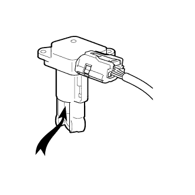

DTC P0100/31 Air Flometer disconnection |
DTC P0102/31 Air Flometer disconnection (LOW) |
DTC P0103/31 Air Flometer disconnection (High) |
| DTC NO. SAE/TCCS | DTC detection conditions
| Inspection site |
|---|---|---|
| P0100/31 |
|
|
| P0102/31 |
|
|
| P0103/31 |
|
|
| Inhaled air volume (G/Sec) | Bug content |
|---|---|
| 0.0 |
|
| 170.1 or higher |
|
| Step 1 | Tascan data reading (inhaled air volume) |
Connect SST (Tascan) to DLC3.
Ig ON.
Follow the SST (Tascan) screen display, and select [ECU Data Monitor]-[Inhaled air amount].
In the idling state, read the amount of inhaled air displayed in SST (Tascan).
| Tester display | Destination |
|---|---|
| Approximately 0.0g/sec | A |
| 170.1g/sec or higher | B |
| Beyond 0.0g/sec, less than 170.1g/sec | C |
|
| ||||
|
| ||||
| A | |
| Step 2 | Wire harness and connector inspection (Intake airflow meter SUB-ASSY power supply voltage inspection) |
reference.Intake airflow meter Sub-assigned connector B24.
Ig ON.
The voltage between the terminals is measured using SST (Toyota Electrical Tester).
| Inspection terminal | Inspection condition | Reference value |
|---|---|---|
| B24-1 (+B) --Body Earth | IG ON | 11 to 14v |
| *a | Vehicle wire harness connector front side (Intake airflow meter SUB-ASSY connection connector) |
|
| ||||
| OK | |
| Step 3 | Wire harness and connector inspection (engine control computer -intake airflow meter SUB -ASSY) |
reference.Cut the connector B37 of the engine control computer.
Intake airflow meter Sub-assigned connector B24.
Use SST (Toyota Electrical Tester) to measure resistance between terminals.(The terminal array isreference)
| Inspection terminal | Inspection condition | Reference value |
|---|---|---|
| B37-24 (VG) --B24-3 (VG) | Always | Less than 1Ω |
| B37-32 (E2VG) --B24-2 (E2G) | Always | Less than 1Ω |
| Inspection terminal | Inspection condition | Reference value |
|---|---|---|
| B37-24 (VG) and B24-3 (VG) -This between other terminals and body earth | Always | 10kΩ or higher |
| B37-32 (E2G) and B24-2 (E2G) -This between other terminals and body earth | Always | 10kΩ or higher |
|
| ||||
| OK | |
| Step 4 | Intake airflow meter SUB-ASSY inspection |
Do a single inspection.(The point isreference)
|  |
Intake airflow meter SUB-ASSY Function inspection.
Remove the intake airflow meter SUB-ASSY with the connector attached.
Connect SST (Tascan) to DLC3.
Ig ON.
According to the SST (Tascan) screen display, select [ECU Data Monitor] - [Inhaled air amount].
Confirm that when air is blown into the intake airflow meter SUB-ASSY, the number of inhaled air fluctuates.
|
| ||||
| OK | ||
| ||
| Step 5 | Wire harness and connector inspection (intake airflow meter SUB -ASSY -Body Earth) |
reference.Intake airflow meter Sub-assigned connector B24.
Use SST (Toyota Electrical Tester) to measure resistance between terminals.
| Inspection terminal | Inspection condition | Reference value |
|---|---|---|
| B24-2 (E2G) --Body Earth | Always | Less than 1 Ω |
| result | Destination |
|---|---|
| Abnormality | A |
| normal | B |
|
| ||||
| A | |
| Step 6 | Wire harness and connector inspection (engine control computer -intake airflow meter SUB -ASSY) |
reference.Cut the connector B37 of the engine control computer.
Intake airflow meter Sub-assigned connector B24.
Use SST (Toyota Electrical Tester) to measure resistance between terminals.(The terminal array isreference)
| Inspection terminal | Inspection condition | Reference value |
|---|---|---|
| B37-32 (E2G) --B24-2 (E2G) | Always | Less than 1Ω |
| Inspection terminal | Inspection condition | Reference value |
|---|---|---|
| B37-32 (E2G) and B24-2 (E2G) -This between other terminals and body earth | Always | 10kΩ or higher |
|
| ||||
| OK | ||
| ||
| Step 7 | Intake airflow meter SUB-ASSY replacement |
Replace the intake airflow meter SUB-ASSY.
| to the next | |
| Step 8 | Diag code erasure |
Connect SST (Tascan) to DLC3.
Ig ON.
Erase the diag code according to the screen display of SST (Tascan).(The point isreference)
| to the next | |
| Step 9 | Activation confirmation operation implementation |
Connect SST (Tascan) to DLC3.
Ig ON.
Start the engine.

Idling for more than 5 seconds.(A)
According to the SST (Tascan) screen display, select [Diagnosis Menu] - [Diagcode Judgment Results Confirmation] - [Diagcode Confirmation].
On the next screen, enter the diagram code to be confirmed.
Confirm the diagcode judgment result.
| result | Destination |
|---|---|
| Abnormality | A |
| normal | B |
| Display item | Content |
|---|---|
| normal | · Diag code judgment is completed · System normal |
| Abnormality | · Diag code judgment is completed · System abnormality |
| During the decision | · Diag code judgment is incomplete After confirming the detection conditions, conduct a driving test |
| It is not possible to determine | · Diag code cannot be judged · The number of diameter codes without prerequisite has reached the upper limit that can be remembered on the engine control computer · After confirming the detection conditions, a driving test is performed |
|
| ||||
| A | ||
| ||